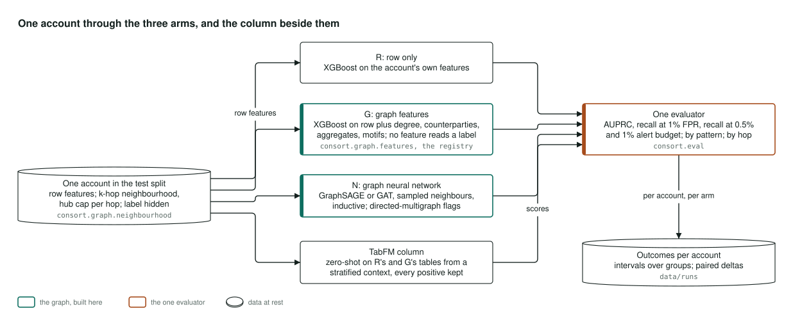
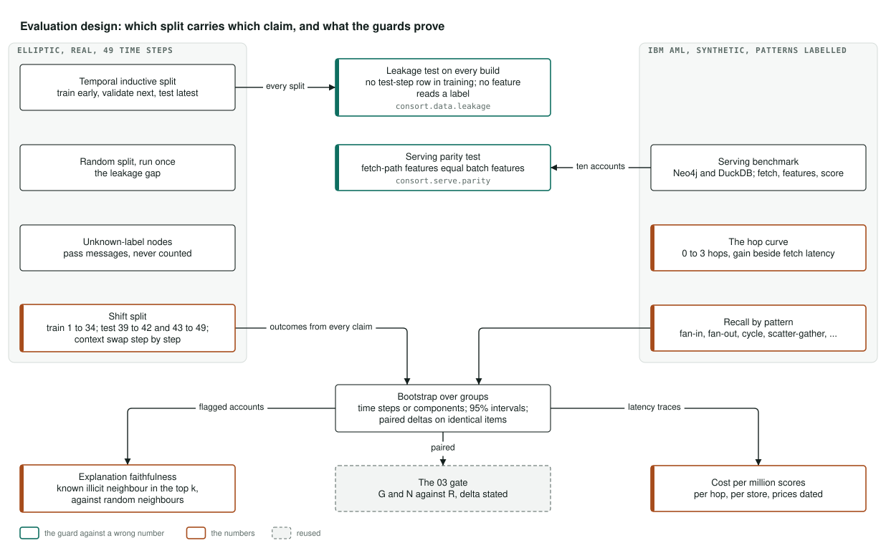

Architecture
How it's built
How the transaction graphs are split, scored three ways, evaluated and served, in three pictures. They were drawn before the first line of code, so that the design could not be shaped to fit the result. Select a diagram to open it full size.
The system

Two public Bitcoin graphs and IBM's synthetic bank transfers come in, each with its licence read and quoted before the first download, fetched by the reader and checked against committed checksums; nothing raw is in the repository. The graph is built once from one source into DuckDB edge tables and PyTorch Geometric objects, and split by time, so that every test account is later than, and new to, everything the models learned from. A leakage test runs on every build.
Three arms score the same accounts: gradient-boosted trees on the row, the same trees on the row plus neighbourhood features, and a graph neural network. Google's TabFM scores the first two tables without training. One evaluator reads every arm's scores without knowing which model wrote them and bootstraps over time steps or hours. From there come the explanations and their faithfulness number, the serving benchmark over three stores, project 03's release gate, and one report command that writes the README's tables and the data behind this site. The exported scorer and its feature view go to project 09's real-time platform.
Where it lives: consort.data, consort.graph, consort.models, consort.eval, consort.explain, consort.serve, consort.gate and consort.report.
One account through the three arms

One test account, with its own row and its neighbourhood out to a stated number of hops, capped at the most recent neighbours per hop so that a hub cannot swamp it. The same code fetches that neighbourhood in the batch run and in the live benchmark, and a parity test holds the two to the same features.
The row model sees only the account. Graph features add degree, counterparties, amounts and velocity summed over the neighbourhood, from a registry that refuses any feature that reads a fraud label. The graph neural network passes messages along the same neighbourhood. The foundation model is shown a sample of training rows that keeps every positive, and scores without training.
Where it lives: consort.graph.neighbourhood, consort.graph.features, consort.models.
Which split carries which claim

The time-ordered split carries every headline number. The random split is run once, only so that the gap it opens can be published. Accounts with no label pass messages in the graph and never enter a metric. The shift test trains before Elliptic's step 43 and tests before and after it, with the step-by-step recovery schedule.
The synthetic set carries what the real sets cannot: recall by laundering shape, and the live serving benchmark, since the real sets are never served or drawn. Every interval resamples time steps or hours, never single accounts, and every comparison between models is paired on identical items.
Where it lives: consort.data.splits, consort.data.leakage, consort.serve.parity, consort.eval.